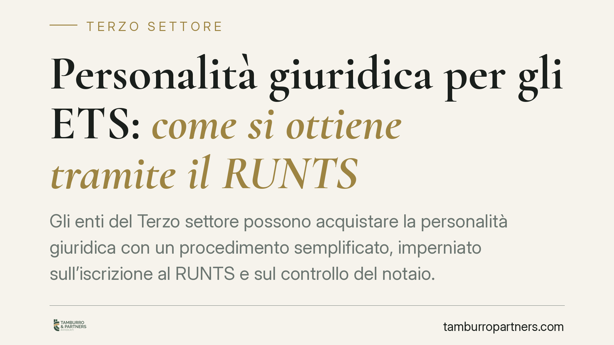

Personalità giuridica per gli ETS: come si ottiene tramite il RUNTS
Gli enti del Terzo settore possono acquistare la personalità giuridica con un procedimento semplificato, imperniato sull'iscrizione al RUNTS e sul controllo del notaio. Un passaggio che incide sulla responsabilità patrimoniale di amministratori e dirigenti. Le novità del DM 2/2026 alleggeriscono gli oneri per gli enti già soggetti a revisione legale dei conti.

Il fatto
Acquisire la personalità giuridica significa, per un ente, diventare un soggetto di diritto autonomo e distinto dai suoi membri. La conseguenza più rilevante è sul piano patrimoniale: per le obbligazioni dell'ente risponde, in linea di principio, soltanto il patrimonio dell'ente stesso, non quello personale di chi lo amministra.
Per gli enti del Terzo settore (ETS) il legislatore ha introdotto una via dedicata, più snella rispetto al tradizionale procedimento davanti a Prefettura o Regione previsto dal DPR 361/2000. Il perno è il Registro Unico Nazionale del Terzo Settore (RUNTS), insieme al controllo affidato al notaio.
Inquadramento normativo
La disciplina di riferimento è l'art. 22 del D.lgs. 117/2017 (Codice del Terzo Settore). La norma prevede che associazioni e fondazioni del Terzo settore acquistino la personalità giuridica mediante iscrizione nel RUNTS, in deroga al DPR 361/2000.
Il meccanismo funziona così: l'atto costitutivo e lo statuto devono essere redatti per atto pubblico. Il notaio che riceve l'atto verifica la sussistenza dei requisiti di legge, incluso il patrimonio minimo, e provvede al deposito presso l'ufficio del RUNTS competente. L'ufficio, entro i termini di legge, iscrive l'ente e da quel momento scatta la personalità giuridica.
Il patrimonio minimo richiesto è di 15.000 euro per le associazioni e di 30.000 euro per le fondazioni. Si tratta di una soglia che deve essere effettivamente disponibile al momento dell'iscrizione: se consiste in beni diversi dal denaro, occorre una relazione giurata di stima. La verifica di questa consistenza patrimoniale è affidata proprio al notaio, che risponde della correttezza del controllo.
Va ricordato che il mantenimento del patrimonio minimo è una condizione continuativa, non un adempimento una tantum: l'art. 22, comma 5, del Codice impone agli amministratori di attivarsi quando il patrimonio scende di oltre un terzo sotto la soglia.
Si segnalano inoltre l'art. 42-bis del Codice civile in materia di trasformazione e fusione degli enti e il DM 106/2020, che disciplina il funzionamento operativo del RUNTS.
Le novità del DM 2/2026
Il DM 2/2026 introduce semplificazioni per gli enti che siano già sottoposti a revisione legale dei conti. Per questi soggetti il controllo sulla consistenza patrimoniale può appoggiarsi alle verifiche già svolte dall'organo di revisione, riducendo la duplicazione di accertamenti in sede di iscrizione.
La ratio è evitare che enti strutturati, già sottoposti a controlli contabili periodici, debbano sopportare oneri documentali aggiuntivi. Resta fermo il ruolo del notaio quale garante della legalità dell'atto.
Implicazioni pratiche
Per chi fonda o amministra un ETS la scelta tra ente dotato di personalità giuridica ed ente privo di essa non è neutra.
Senza personalità giuridica, chi agisce in nome e per conto dell'ente risponde personalmente e solidalmente delle obbligazioni assunte. Con la personalità giuridica, l'autonomia patrimoniale protegge il patrimonio personale degli amministratori, a condizione che l'ente mantenga la dotazione minima.
Il costo da mettere in conto è duplice: il vincolo patrimoniale iniziale e gli oneri di gestione e rendicontazione più rigorosi. Va quindi valutato se le dimensioni e l'attività dell'ente giustifichino il passaggio.
Cosa fare in concreto
- Verificate la disponibilità del patrimonio minimo (15.000 euro per le associazioni, 30.000 per le fondazioni) prima di avviare l'iter: deve essere effettivo e documentabile al momento del deposito.
- Rivolgetevi a un notaio per la redazione dell'atto costitutivo e dello statuto in forma di atto pubblico, poiché il controllo e il deposito al RUNTS competono a lui.
- Predisponete la perizia di stima se il patrimonio include beni diversi dal denaro, così da consentire al notaio la verifica della consistenza.
- Se l'ente è già soggetto a revisione legale, segnalate questa circostanza per avvalervi delle semplificazioni del DM 2/2026.
- Monitorate nel tempo la consistenza patrimoniale: se scende di oltre un terzo sotto la soglia, gli amministratori hanno obblighi specifici di reintegro o di adeguamento.
Disclaimer
Contributo informativo a cura di Tamburro & Partners - Avv. Giuseppe Tamburro. Non costituisce parere legale.
Ogni ente del terzo settore ha la sua storia.
Se rappresenti un ETS e vuoi un confronto su governance, RUNTS o fiscalità, scrivi allo studio. Ti rispondiamo entro un giorno lavorativo.